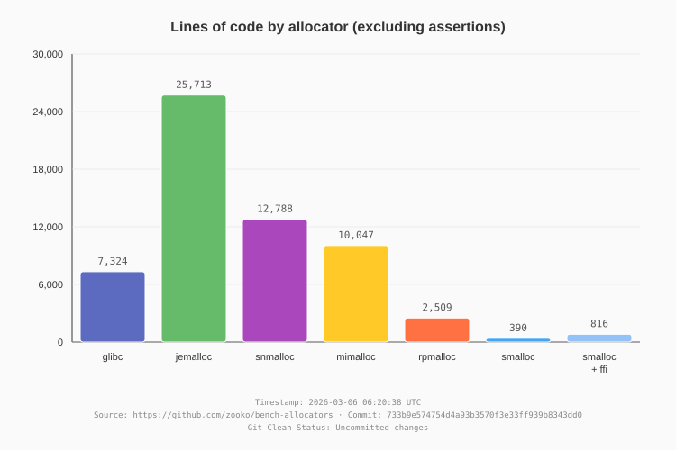
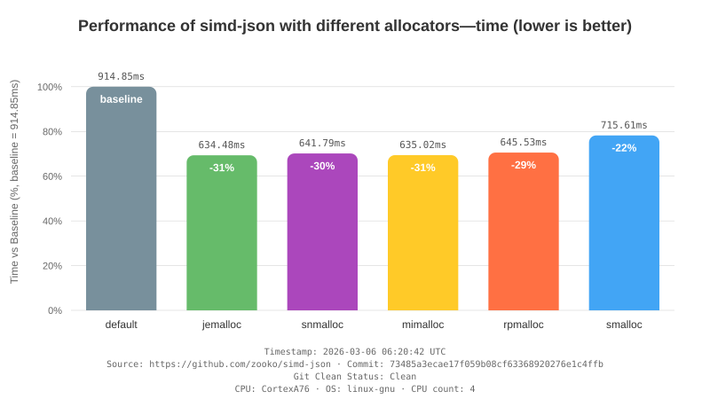
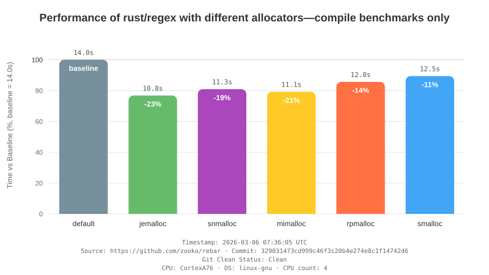
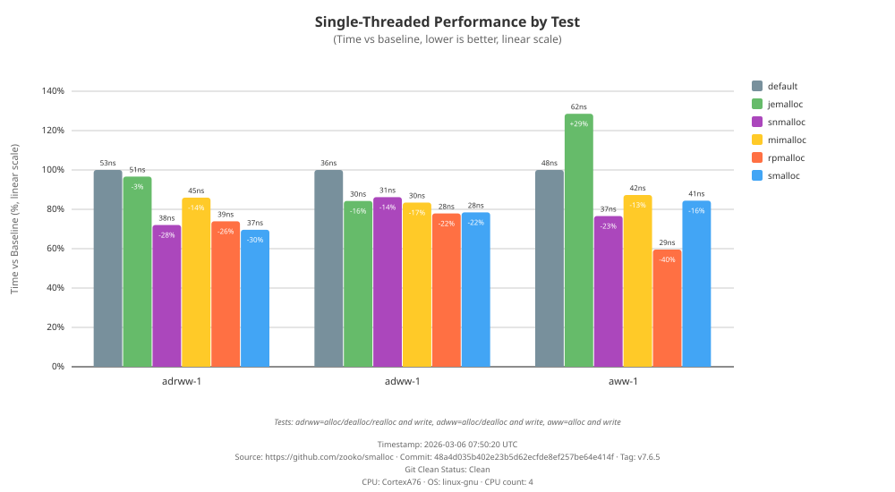
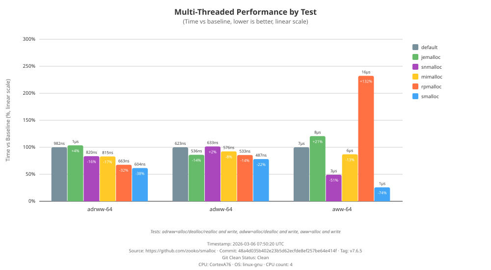

This report compares memory allocator performance across different
workloads.
Allocators Tested
Workloads
- Lines of Code: Implementation size comparison
(excluding debug assertions)
- simd-json: High-performance JSON parser (fork for
benchmarking)
- rebar: Regex engine benchmark harness (fork for benchmarking)
- smalloc bench: Micro-benchmarks for
malloc/free/realloc operations
CPU: CortexA76 OS: linuxgnu
Lines of Code Comparison

View detailed LOC results
simd-json Results

View detailed simd-json
results
rebar Results

View detailed rebar results
smalloc Micro-Benchmarks


View detailed smalloc benchmark
results
Summary
- Lines of Code compares implementation size
(excluding debug assertions)
- simd-json tests allocator performance during JSON
parsing
- rebar tests allocator performance during regex
compilation and matching
- smalloc bench tests raw malloc/free/realloc
performance in single and multi-threaded scenarios
Methodology
- Each allocator is tested using identical code with only the global
allocator changed
- Results show percentage differences from baseline (system
allocator)
- Lower percentages = better performance (less time)
- Baseline (default): The system allocator, shown at
100%
- Negative percentages: Faster than baseline (e.g.,
-3% means 3% faster)
- Positive percentages: Slower than baseline (e.g.,
+5% means 5% slower)
- Bar height: Proportional to execution time
Source: https://github.com/zooko/bench-allocators
git source:
https://github.com/zooko/bench-allocators git commit:
733b9e574754d4a93b3570f3e33ff939b8343dd0 git tag:
git clean status: Uncommitted changes
generated: 2026-03-06 06:20:38 UTC